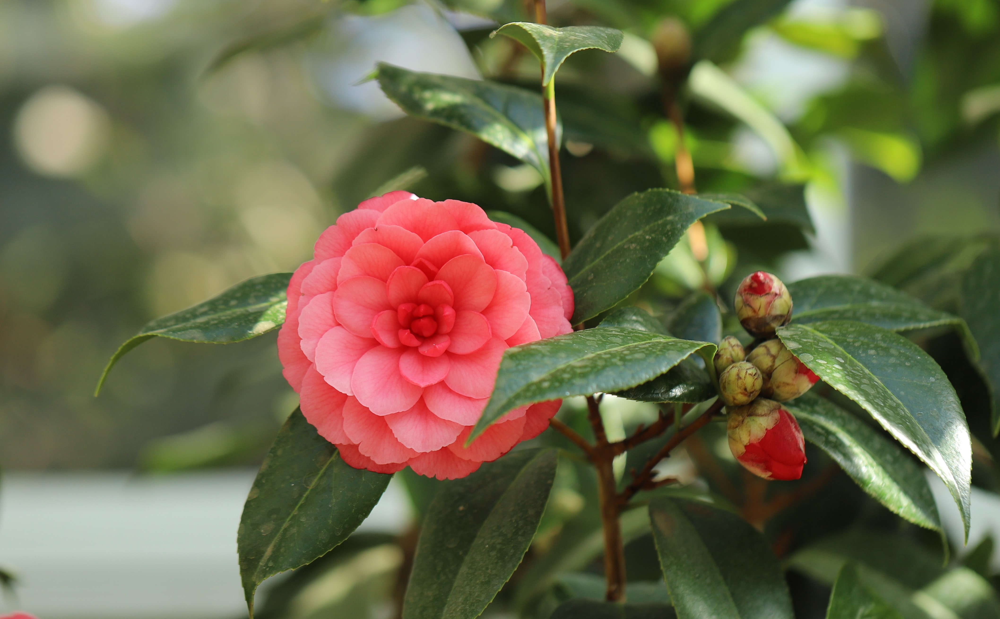
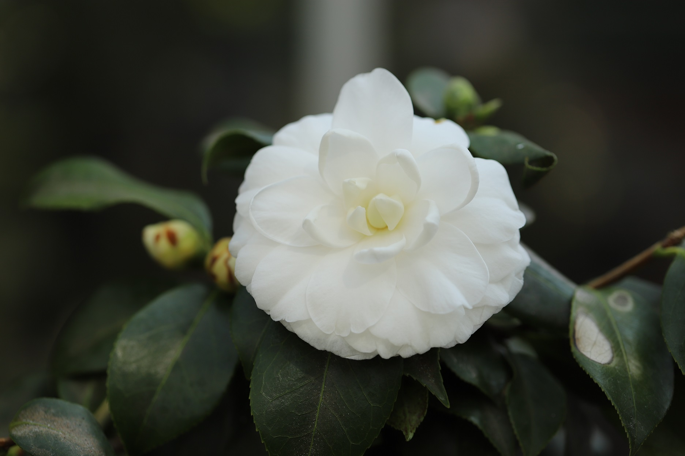
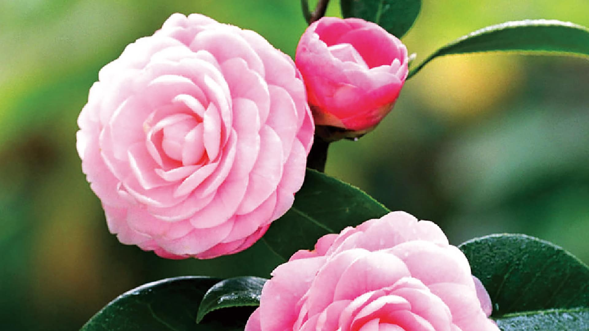

ดอกคามิเลีย
"ดอกชาแสนสวย"
ดอกไม้เมืองหนาวที่มีกลีบดอกแน่นเรียงตัวอย่างสมบูรณ์แบบราวกระโปรงแสนสวยของเจ้าหญิง มีหลายสี ตั้งแต่สีขาว สีชมพู สีแดงสด ที่ใครเห็นก็อดไม่ได้ที่จะชื่นชอบ โดยความจริงแล้วดอกคามิเลียที่เราเรียกกันเป็นดอกของพืชที่อยู่สกุลเดียวกับชา (tea) คือสกุล คามิเลีย (Camellia) หากพูดถึงเฉพาะชนิดที่สำคัญจะถูกแบ่งออกเป็น คามิเลียที่นิยมใช้ใบชงเป็นเครื่องดื่ม หรืออาหาร มากกว่าจะรอชื่นชมดอก เรียกว่า ชากินใบ ที่เรารู้จักกันดีนั้นอย่าง ชาเขียว ชาอู่หลง ชาเมี่ยง ชาฝรั่ง จนทาสชาต้องร้องอ๋อ !!! คามิเลียบางชนิดก็ใช้ประโยชน์จากน้ำมันในเมล็ดเพื่อบริโภค เช่น ชาน้ำมัน (oil tea camellia) และ คามิเลียที่นิยมปลูกประดับ หรือ ชาประดับ เช่น ชาญี่ปุ่น หรือ คามิเลียญี่ปุ่น (Japanese camellia) คามิเลีย Sasanqua เป็นต้น และส่วนใหญ่ก็มักจะเรียกดอกชาประดับเหล่านี้รวมๆ ว่า “คามิเลีย”
ดอกของคามิเลียพบว่ากระจายพันธุ์ในเขตเมืองหนาว สำหรับทวีปเอเชียจะพบมากแถบประเทศญี่ปุ่น เกาหลี สาธารณรัฐประชาชนจีน มีดอกสีสวยโดดเด่น ละม้ายคล้ายดอกกุหลาบขนาดใหญ่ ใช้ประดับสวน ตกแต่งภูมิทัศน์ อย่างเกาะเชจูในประเทศเกาหลีรวมถึงหลายประเทศในเขตเมืองหนาว ที่มีเทศกาลชมสวนคามิเลีย ถือว่าฮอตฮิตไม่น้อยเลยทีเดียว เพราะหลายคนไปเพื่อถ่ายรูปสวยๆ เก็บเป็นภาพประทับใจโดยเฉพาะคู่บ่าวสาว
About.
ถึงแม้ดอกคามิเลียจะเป็นดอกไม้เมืองหนาว ทำให้หลายๆ คนคิดว่าคามิเลียมีต้นกำเนิดจากยุโรป แต่ที่จริงแล้วการเพาะพันธุ์คามิเลียเริ่มต้นมาจากเอเชียตะวันออก นี่เป็นเหตุผลที่ดอกคามิเลียปรากฏอยู่ในผลงานศิลปะต่างๆ ของประเทศจีนและประเทศญี่ปุ่น ซึ่งได้รับอิทธิพลมาจากประเทศจีนอีกต่อหนึ่ง แต่ถึงอย่างนั้น ชื่อของคามิเลียก็ถูกตั้งตาม จอร์จ โจเซฟ คาเมล (Georg Joseph Kamel) มิชชันนารีและนักพฤกษศาสตร์ชาวฟิลิปปินส์ที่นำดอกไม้ชนิดนี้ไปเยือนยุโรปในช่วงศตวรรษที่ 17 โดยคาร์ล ลินนัส (Carl Linnaeus) นักพฤกษศาสตร์ชาวสวีเดนเป็นผู้ตั้งชื่อดอกไม้ชนิดนี้ว่า คามิเลีย ตามชื่อจอร์จ โจเซฟ คาเมล เพื่อเป็นการให้เกียรติเขา


